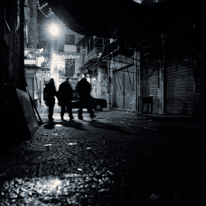

01. A place for getting together
01. Gloryhole.
02. A place for contemplation
02. Trance like contemplation that makes you leave reality for 135 minutes.
03. A place that smells good
03. I miss humans.
04. A place for decompression
04.
05. A place of sad memory
05. So many dreams about what your life could be like, look like, dream like - what you could have but also lose. But in the end you're "just" a person on a desk not sure if your life will be anything like you want it to be. (the urge to escape this reality and live inside your purest fantasies)
06. A place you never want to go
06. NK
07. A place that scares you
07.

08. A place that fills you with joy
08. Pose Ballroom
09. A place for you to rest
10. A place you want to go but have never been
10. I want to be the third wheel in this animal bff universe RIGHT NOW AND NEVER LEAVE.